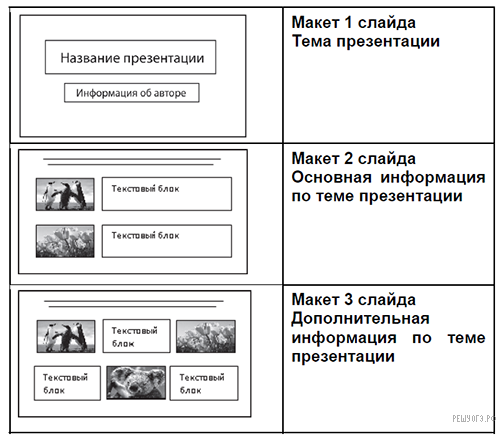
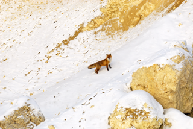
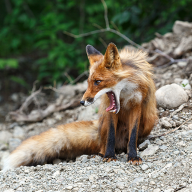
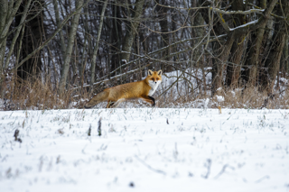
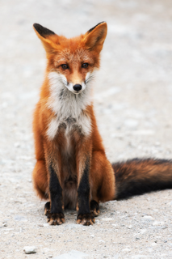
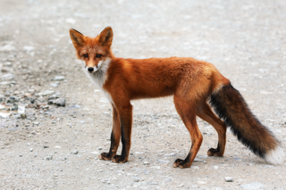
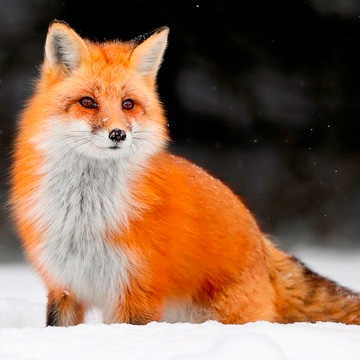
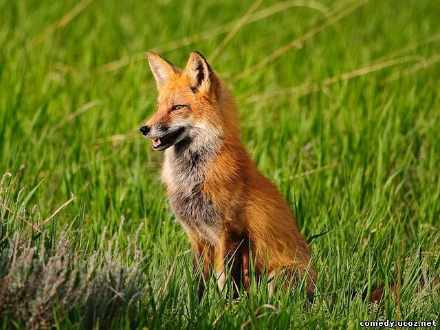

Используя информацию и иллюстративный материал, содержащийся в каталоге "Лисица", создайте презентацию из трех слайдов на тему "Лисица". В презентации должны содержаться краткие иллюстрированные сведения о внешнем виде, об ареале обитания, образе жизни и рационе пингвинов. Все слайды должны быть выполнены в едином стиле, каждый слайд должен быть озаглавлен.
Требования к оформлению презентации
2. Содержание, структура, форматирование шрифта и размещение изображений на слайдах:
● первый слайд — титульный слайд с названием презентации; в подзаголовке титульного слайда в качестве информации об авторе презентации указывается идентификационный номер участника экзамена;
● второй слайд — основная информация в соответствии с заданием, размещенная по образцу на рисунке макета слайда 2:
− заголовок слайда;
− два блока текста;
− два изображения;
● третий слайд — дополнительная информация по теме презентации, размещенная по образцу на рисунке макета слайда 3:
− заголовок слайда;
− три изображения;
− три блока текста.
На макетах слайдов существенным является наличие всех объектов, включая заголовки, их взаимное расположение. Выравнивание объектов, ориентация изображений выполняются произвольно в соответствии с замыслом автора работы и служат наилучшему раскрытию темы.

В презентации должен использоваться шрифт Calibri
Размер шрифта: для названия презентации на титульном слайде — 40 пунктов; для подзаголовка на титульном слайде и заголовков слайдов — 24 пункта; для подзаголовков на втором и третьем слайдах и для основного текста — 20 пунктов.
Текст не должен перекрывать основные изображения или сливаться с фоном.
Фото для презентации:







Текст для презентации:
Лисица, лиса, обыкновенная, или рыжая лисица (лат. Vulpes vulpes) – хищное млекопитающее семейства псовых, наиболее распространённый и самый крупный вид рода лисиц. Длина тела 60–90 см, хвоста – 40–60 см, масса – 6–10 кг.
Лисица распространена весьма широко: на всей территории Европы, Северной Африки (Египет, Алжир, Марокко, Северный Тунис), большей части Азии (вплоть до Северной Индии, Южного Китая и Индокитая), в Северной Америке от арктической зоны до северного побережья Мексиканского залива. Лисица была акклиматизирована в Австралии и распространилась по всему континенту, за исключением некоторых северных районов с влажным субэкваториальным климатом.
Ранее считалось, что в Америке живёт отдельный вид лисиц, но в последнее время его рассматривают как подвид рыжей лисицы.
Окраска и размеры лисиц различны в разных местностях; всего насчитывают 40–50 подвидов, не учитывая более мелких форм. В общем при продвижении на север лисицы становятся более крупными и светлыми, на юг – мелкими – и более тускло окрашенными. В северных районах и в горах также чаще встречаются чёрно-бурые и другие меланистические формы окраски лисиц. Наиболее распространённый окрас лисы: ярко-рыжая спина, белое брюхо, тёмные лапы. Часто у лисиц присутствуют бурые полосы на хребте и лопатках, похожие на крест. Общие отличительные черты: тёмные уши и белый кончик хвоста. Внешне лисица представляет собой зверя среднего размера с изящным туловищем на невысоких, тонких лапах, с вытянутой мордой, острыми ушами и длинным пушистым хвостом.
Линька начинается в феврале-марте и заканчивается в середине лета. Сразу же после этого у лисицы начинает отрастать зимний мех, в который она полностью одевается к рубежу ноября и декабря. Летний мех редкий и короткий, зимний – более густой и пышный. Лисы отличаются большими ушными раковинами-локаторами, при помощи которых они улавливают звуковые колебания. Уши для лис – «ловец» добычи.
Лисица, хотя и принадлежит к типичным хищникам, питается очень разнообразными кормами. Среди пищи, которую она употребляет, выявлено больше 400 видов одних только животных, не считая нескольких десятков видов растений. Повсеместно основу её питания составляют мелкие грызуны, главным образом полёвковые. Можно даже сказать, что от достаточности их числа и доступности в значительной мере зависит состояние популяции этого хищника. Особенно это относится к зимнему периоду, когда лисица живёт в первую очередь охотой на полёвок: зверь, учуяв под снежным покровом грызуна, прислушивается к его пискам или шорохам, а потом быстрыми прыжками ныряет под снег или разбрасывает его лапами, пытаясь поймать добычу. Этот способ охоты получил название мышкование.
Растительные корма – плоды, фрукты, ягоды, реже вегетативные части растений – входят в состав питания лисиц почти всюду, но более всего на юге ареала; впрочем, нигде они не играют ключевой роли в пропитании представителей данного вида. Лисицы наносят существенный урон посевам овса, поедая эти растения в состоянии молочной спелости.
Чаще всего лисицы поселяются на склонах оврагов и холмов, выбирая участки с песчаным грунтом, защищённые от заливания дождевыми, грунтовыми и талыми водами. Даже если нора выкопана лисой самостоятельно, не говоря уже о барсучьих и других норах, она обычно имеет несколько входных отверстий, которые ведут через более-менее длинные туннели в гнездовую камеру. Иногда лисицы используют естественные укрытия – пещеры, расщелины скал, дупла толстых деревьев. В большинстве случаев (но не всегда) жильё бывает хорошо покрыто густыми зарослями. Но его демаскируют длинные тропы, а вблизи – большие выбросы земли возле входов, многочисленные остатки пищи, экскременты и т.д. Нередко на «городках» лисиц развивается пышная сорняковая растительность.
Как правило, лисицы используют постоянные укрытия лишь в период воспитания детёнышей, а на протяжении остального года, в частности зимой, отдыхают в открытых логовах в снегу или траве. Но, спасаясь от преследования, лисицы в любое время года могут укрыться в какой угодно норе, которая найдётся в местах их обитания. Также во время воспитания потомства звери часто вынуждены несколько раз менять жильё из-за его заражённости паразитами.
Охотятся лисицы в разное время дня, предпочитая, однако, раннее утро и поздний вечер, а там, где их не преследуют, встречаются днём, причём не обнаруживают беспокойства при встрече с человеком. В противном случае эти звери отличаются крайней осторожностью и удивительной способностью перепрятываться и сбивать со следа погоню – именно поэтому в фольклоре многих народов лисица является воплощением хитрости и ловкости.
Лисицы, живущие возле туристических троп, пансионатов, в местах, где запрещена охота, быстро привыкают к присутствию человека, легко поддаются прикармливанию и могут заниматься попрошайничеством.
Лисица имеет большое хозяйственное значение как ценный пушной зверь, а также регулятор численности грызунов и насекомых. При этом ущерб, который наносят лисицы промысловой дичи и домашним птицам, намного меньше той пользы, которую они приносят, уничтожая грызунов – потребителей зерна.